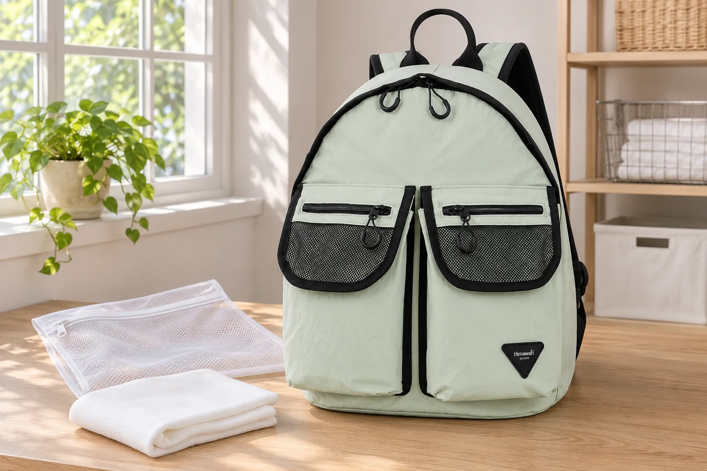
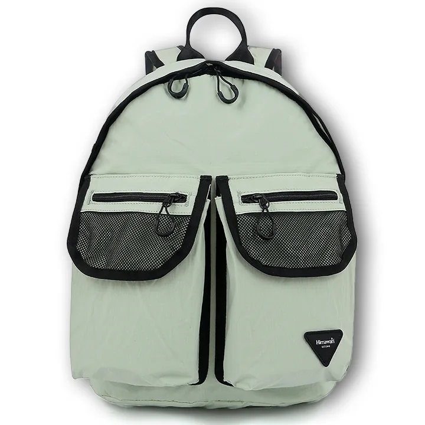
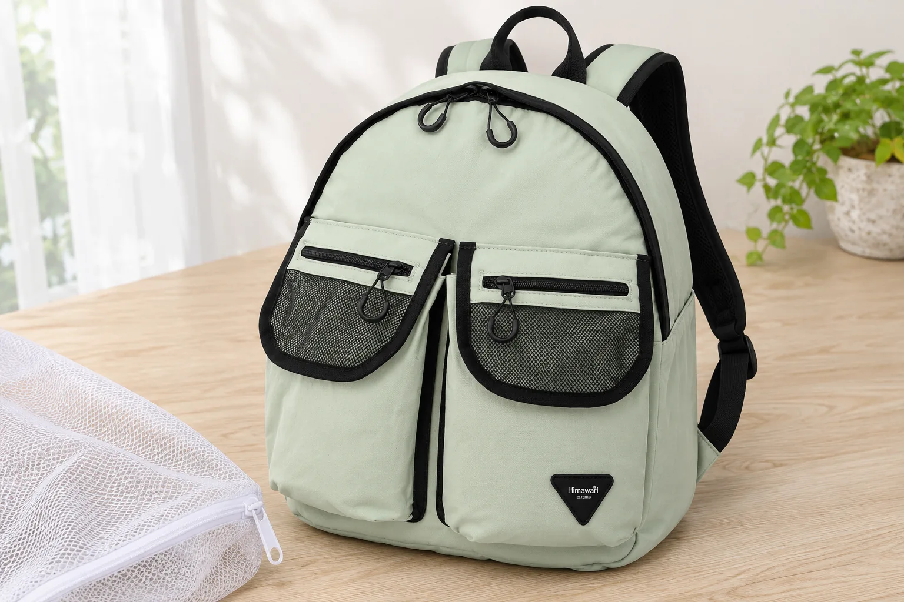

세탁망에 넣으면 백팩도 세탁기로 빨아도 될까

백팩의 먼지를 털다가 앞주머니까지 한 번에 씻고 싶어질 때가 있습니다. 세탁망에 넣고 약한 코스를 고르면 괜찮지 않을까요. 가방 관리 안내가 세탁기 사용을 피하라고 한다면 망을 더했다는 이유로 그 안내를 바꿔 읽을 수는 없습니다. 세탁망의 사용법과 완성된 가방의 세탁 조건은 각각 확인할 정보입니다.
No.1230 민트의 제품 정보에는 부드러운 천으로 부분 관리한 뒤 그늘에서 말리고 세탁기와 건조기 사용을 피하라고 적혀 있습니다. 겉감은 나일론, 안감은 폴리에스터이며 외부 크기는 가로 32 × 세로 40 × 폭 18cm입니다. 소재나 크기가 확인됐어도 세탁기 안에서 다뤄도 된다는 허가는 생기지 않습니다. 여기서는 이 안내를 세탁망과 연결해 읽을 때 생기는 질문을 살펴봅니다.
망에 가방이 들어가면 사용해도 되나요
망의 입구가 닫히는지와 가방을 기계로 세탁해도 되는지는 다른 문제입니다. No.1230의 둥근 본체 앞에는 긴 포켓 두 개가 있습니다. 포켓 위쪽 일부는 메쉬이며 검정 지퍼와 테두리가 함께 보입니다. 이런 완성된 형태를 망에 담았다고 해서 원단만 따로 세탁하는 상태로 바뀌지는 않습니다. 세탁망에 맞는 크기라는 관찰은 남길 수 있지만 가방의 관리 안내보다 우선하는 조건은 아닙니다.
세탁망 포장에 가방 그림이 있거나 큰 의류를 넣을 수 있다고 적혀 있어도 내 백팩의 허용 방법을 대신하지 않습니다. 망이 안내하는 용도와 가방이 안내하는 관리법을 모두 만족하는 경우에만 같은 작업에 쓸 근거가 생깁니다. 어느 한쪽에서 확인되지 않는 조건을 다른 쪽의 그림으로 채우지 않는 편이 정확합니다. 이 글의 사진에서도 망은 가방 바깥에 따로 놓았습니다. 실제 세탁을 하거나 보호 효과를 비교한 결과가 아닙니다.

울 코스나 손세탁 코스를 고르면 달라질까요
세탁기의 코스 이름에 손세탁이라는 말이 들어 있어도 가방을 손으로 부분 관리하는 동작과 같다고 볼 수는 없습니다. 해당 기기의 설명은 그 코스의 세탁 과정을 알려줍니다. 가방에 허용된 관리는 가방의 제품 안내에서 확인합니다. 코스 이름만 보고 No.1230의 세탁기 사용을 피하라는 문장을 지울 근거는 없습니다. 새로 산 세탁기의 기능이 많아졌어도 확인할 대상은 그대로 남습니다.
다른 브랜드의 관리 안내를 참고할 때도 적용 범위를 봅니다. deuter는 자사 백팩의 세탁기 사용을 피하도록 안내하면서 마찰과 코팅 손상을 이유로 설명합니다. 이 자료를 보면 완성된 백팩을 관리할 때 원단 이름만 확인해서는 부족하다는 점을 알 수 있습니다. 다만 그 설명만으로 No.1230에 같은 코팅이 쓰였다고 단정하거나 deuter가 허용한 세정 방법을 이 가방에 옮겨 적용하지는 않습니다. 실제 사용할 방법은 해당 제품 안내에서 정합니다.
세탁기만 피하면 물에 담가도 되나요
기계세탁을 피하라는 안내를 읽은 뒤 곧바로 손세탁을 고르는 것도 한 단계가 빠진 판단입니다. No.1230의 현재 안내는 부드러운 천을 이용한 부분 관리를 말합니다. 가방 전체를 물에 담그는 방법, 세제 종류나 농도, 불리는 시간은 여기서 확인되지 않습니다. 천으로 한 면을 다루는 일과 본체·포켓·끈을 함께 담그는 일은 작업 범위가 다릅니다. 손으로 한다는 공통점만으로 두 방법을 묶지 않습니다.
부분 관리에 필요한 구체적인 조건이 없다면 얼룩의 위치와 현재 상태를 정리해 판매처에 물을 수 있습니다. 앞쪽 메쉬 주변에 묻은 흔적인지, 바닥의 한 면인지 알려주면 문의가 좁아집니다. 세정제를 정하지 못한 상태에서 인터넷의 원단별 희석 비율을 가져오거나 지퍼 주변까지 같은 방법으로 넓혀 닦지는 않습니다. 사진에 보이는 민트색과 검정색 면도 각각 어디까지 처리하려는지 설명할 자료입니다.

씻지 않고 탈수만 하면 괜찮을까요
세탁과 탈수, 건조는 같은 허가 한 장으로 취급할 단계가 아닙니다. 물에 담그는 방법이 확인되지 않은 상황에서 먼저 적신 뒤 탈수 방법을 찾으면 시작 전의 선택지로 돌아가기 어렵습니다. 세탁기는 쓰지 않고 건조기만 잠깐 쓰겠다는 선택도 현재의 건조기 사용을 피하라는 안내와 맞지 않습니다. No.1230에는 부분 관리 후 그늘에서 말리라는 조건이 함께 적혀 있습니다.
말리는 동안 빨리 모양을 잡으려고 망 안에서 비틀거나 끈을 묶어 당길 이유도 없습니다. 사진의 세탁망은 별도 소품이며 가방을 걸어 말릴 부품으로 확인한 물건이 아닙니다. 가방에 물기가 남은 경우에는 관리한 면과 주변의 상태를 보고 제품이 안내한 건조 방법을 따릅니다. 통풍되는 곳에 두라는 안내를 난방기 앞이나 강한 햇볕에서 말려도 된다는 뜻으로 넓히지 않습니다.
이미 한 번 빨았는데 멀쩡해 보이면요
한 번 세탁한 뒤 겉모양이 유지됐다는 관찰은 그때 보인 상태의 기록입니다. 앞으로 같은 처리를 해도 된다는 제품 허가나 장기간의 내구 시험이 되지는 않습니다. 반대로 어떤 변화가 보였다고 원인을 전부 세탁망 탓으로 확정할 수도 없습니다. 사용한 코스와 건조 방식, 작업 전후의 위치를 적어 문의할 자료로 남기는 편이 좋습니다. 사진만으로 안쪽까지 문제가 없는지 판정하지는 않습니다.
아직 작업을 시작하지 않았다면 망을 고르기 전에 관리 범위를 읽어 보세요. No.1230 민트처럼 부분 관리와 그늘 건조를 안내한 가방에서는 그 조건부터 따릅니다. 망의 크기가 넉넉하다는 사실이나 약한 코스가 있다는 사실은 세탁 허용 여부에 대한 답을 대신하지 않습니다. 확인되지 않은 처리는 남겨 두고 현재 안내 안에서 할 수 있는 관리부터 정하면 됩니다.